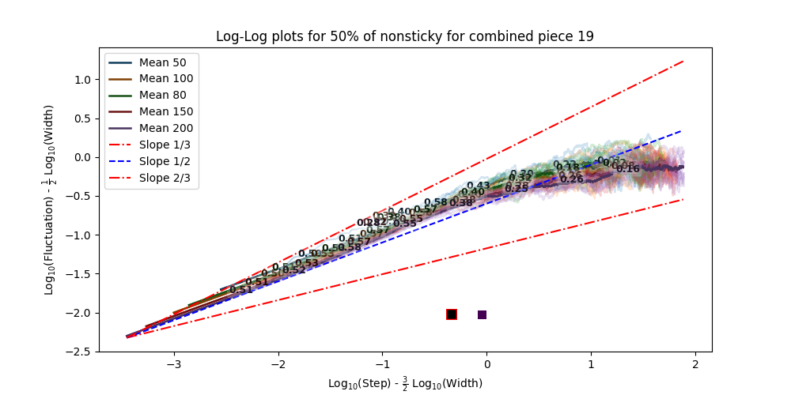
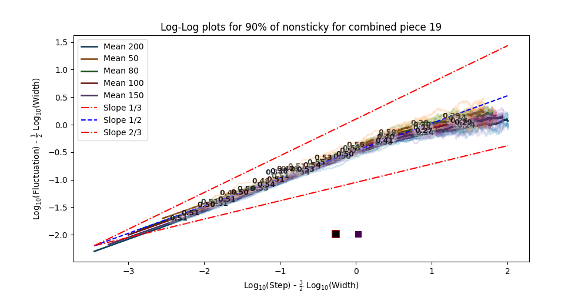
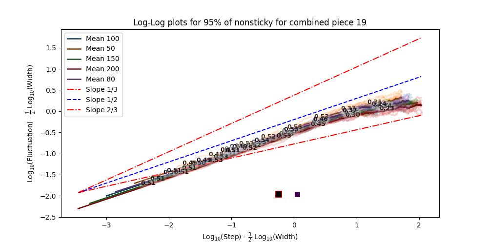
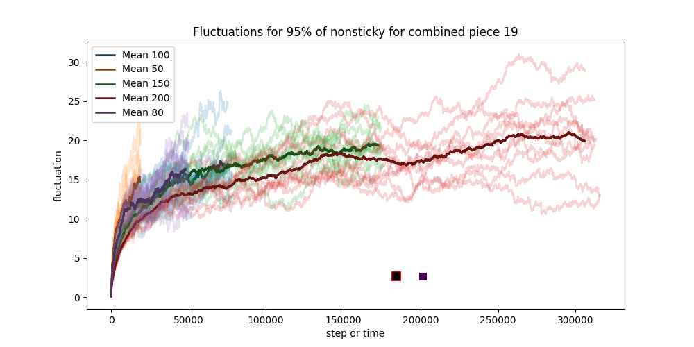
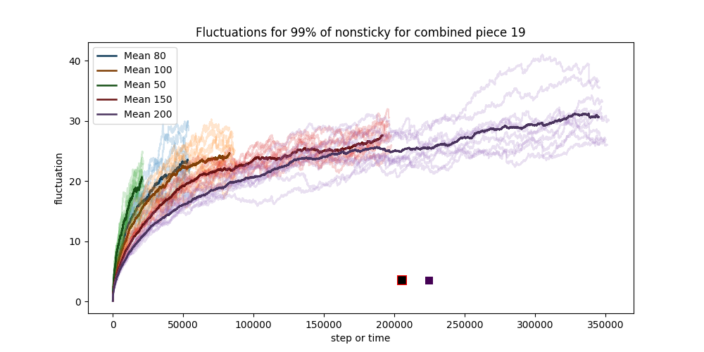
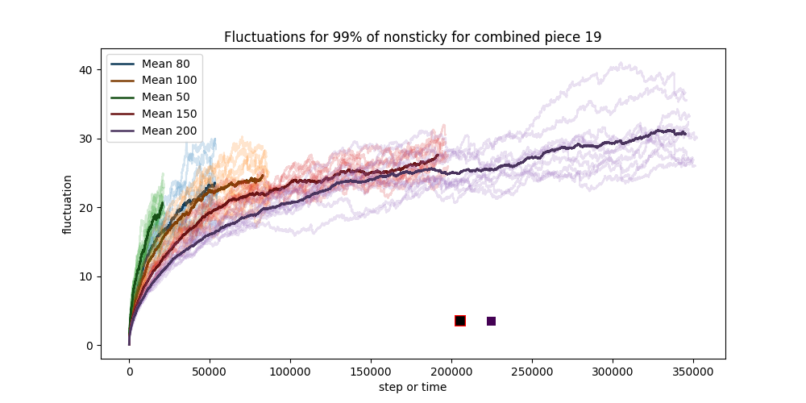

Surface Growth Models with Random Tetris Pieces
Le Chen
le.chen@auburn.eduDepartment of Mathematics and Statistics
Auburn University
Forum on Scientific and Engineering Computing 2024
Chinese Academic of Science, Beijing,
June 15-16, 2024
Two graduate students who have been working on this project throughout
Math 7820/30: Applied Stochastic Processes (2023/24):


DMS-Probability: No. 2246850
(2023-2026)
Sand pile at beach vs Snow pile in winter

Image created by OpenAI's DALL-E
1980's

Simulation by Tetris-Ballistic package


Fluctuations $t↦ W(L,t)$

Nonsticky

Sticky
$t↦ \log W(L,t)$

Nonsticky

Sticky
Family-Vicsek scaling relation
Kardar-Parisi-Zhang (KPZ) Equation
\begin{align*} ∂_t h(t,x) = ν ∇^2 h + λ(∇ h)^2 + η \end{align*}If $|∇ h|$ is small, then
\begin{align*} Œ¥ h = \sqrt{(v Œ¥ t)^2 + (v Œ¥ t ∇ h)^2 } ‚âà (v Œ¥ t) (1 + (∇ h)^2/2) \end{align*} \begin{align*} \frac{ùúï h(t,x)}{ùúï t} = v + \frac{v}{2} (\nabla h )^2 + ‚ãØ \end{align*}More examples
Paper inking


Paper burning

Paper as random environment

Snow pile in one dimension

Gaussian orthogonal ensemble (GOE)

Simulation by scikit-rmt package
Longest increasing subsequence
- Permutations
- LIS
- Length
- 0,1,2,3
- 0,1,2,3
- 4
- 3,2,1,0
- 3 (or 2 ...)
- 1
- 2,1,0,3
- 0,3
- 2
A random permutation of $N=16$
0, 8, 4, 12, 2, 10, 6, 14, 1, 9, 5, 13, 3, 11, 7, 15.
- LIS
- Length
- 0,2,6,9,11,15
- 6
- 0,4,6,9,11,15
- 6
- 0,2,6,9,13,15
- 6
- 0,4,6,9,13,15
- 6
Example from Wikipedia
Growing interfaces in a thin film


KPZ Universality Class
Tetris Pieces?
1x1; nonsticky
1x1; sticky
2x2; nonsticky

2x2; sticky

L4; nonsticky

L4; sticky

L1, L2, L3, L4; nonsticky

L1, L2, L3, L4; sticky

All Tetris Pieces; nonsticky

All Tetris pieces; sticky

4x1; nonsticky

4x1; sticky

Any crossover of Gaussian and KPZ?
5% nonsticky + 95% sticky


50% nonsticky + 50% sticky

90% nonsticky + 10% sticky

95% nonsticky + 5% sticky
 98% nonsticky + 2% sticky


99% nonsticky + 1% sticky
 

Install
PyPI: Tetris Ballistic
Source code
GitHub: Simulations on Some Surface Growth Models
Our understanding of surface growth is
still VERY LIMITED...
Diffusion-limited aggregation (DLA)

Simulation by markstock/dla-nd

Image from NSF News 2010
Educational components
- Besides Mathematics itself...
- Programming assisted by
- ChatGPT 4.0
- GitHub Copilot
- ...
- Workflow with version control via Git and GitHub
- Efficient tools
- Terminal
- vim/neovim (by the way, I am using vim.)
- ...
Referneces
| [1] | J. Baik, P. Deift, and K. Johansson. On the distribution of the length of the longest increasing subsequence of random permutations. J. Amer. Math. Soc., 12(4):1119--1178, 1999. [ bib | DOI | http ] |
| [2] | A.-L. Barabási and H. E. Stanley. Fractal concepts in surface growth. Cambridge University Press, Cambridge, 1995. [ bib | DOI | http ] |
| [3] | F. Family and T. Vicsek. Scaling of the active zone in the eden process on percolation networks and the ballistic deposition model. Journal of Physics A: Mathematical and General, 18(2):L75, feb 1985. [ bib | DOI | http ] |
| [4] | M. Kardar, G. Parisi, and Y.-C. Zhang. Dynamic scaling of growing interfaces. Phys. Rev. Lett., 56(9):889, 1986. [ bib | DOI | http ] |
| [5] | K. A. Takeuchi, M. Sano, T. Sasamoto, and H. Spohn. Growing interfaces uncover universal fluctuations behind scale invariance. Sci. Rep., 1(1):1--5, 2011. [ bib ] |
| [6] | T. A. Witten and L. M. Sander. Diffusion-limited aggregation, a kinetic critical phenomenon. Phys. Rev. Lett., 47:1400--1403, Nov 1981. [ bib | DOI | http ] |
| [7] | J. Zhang, Y.-C. Zhang, P. Alstrøm, and M. Levinsen. Modeling forest fire by a paper-burning experiment, a realization of the interface growth mechanism. Phys. A: Stat. Mech. Appl., 189(3):383--389, 1992. [ bib | DOI | http ] |